Manifold Sampling via Entropy Maximization
Technische Universität Berlin · Robotics Institute Germany
NeurIPS 2026 · *Equal contribution, authors in alphabetical order
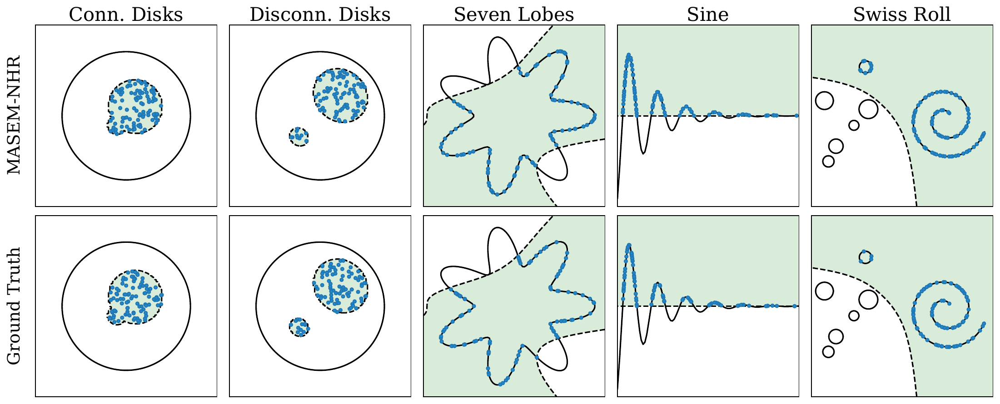
Sampling from distributions on implicitly defined manifolds: Prior work assumes that the feasible set is connected, but in practice it often decomposes into multiple disconnected components. We propose MAnifold Sampling via Entropy Maximization (MASEM) which uses a resampling scheme that maximizes the entropy of the empirical distribution based on \(k\)-nearest-neighbor density estimation, and improves over alternatives by an order of magnitude in Sinkhorn distance with competitive runtime.
Method
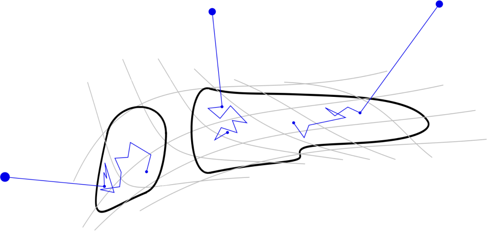
MASEM solves this by adding an entropy-maximizing resampling step to any local constrained sampler:
Assume the feasible set \(\Sigma\) splits into finitely many connected components and the local sampler mixes well within each component. Then, in the mean-field limit, every MASEM resampling step pulls the per-component sample mass \(\alpha_t\) toward the uniform (maximum-entropy) allocation \(\alpha^*\):
\(\tau \in (0, p)\): resampling temperature · \(p\): intrinsic dimension of the manifold · \(t\): number of resampling steps.Reaching \(D_{\mathrm{KL}} \le \varepsilon\) takes \(\mathcal{O}\big((\log(1/\varepsilon) + \log\log N)/\tau\big)\) steps in the worst case, for \(N\) particles.
The resampling step is modular and adds only a small runtime overhead to the underlying sampler.
Robotics samples
Feasible samples drawn with MASEM on robotics problems.
Results
All curves show the mean and 95% confidence interval across seeds. Swipe wide figures sideways to see all panels.
Strong sampling at low cost
Local samplers like NHR and OLLA cannot move mass between disconnected components, so they stall at a high Sinkhorn distance. Once resampling starts, MASEM rebalances the components and converges to a distance that is an order of magnitude lower, without increasing constraint violation.
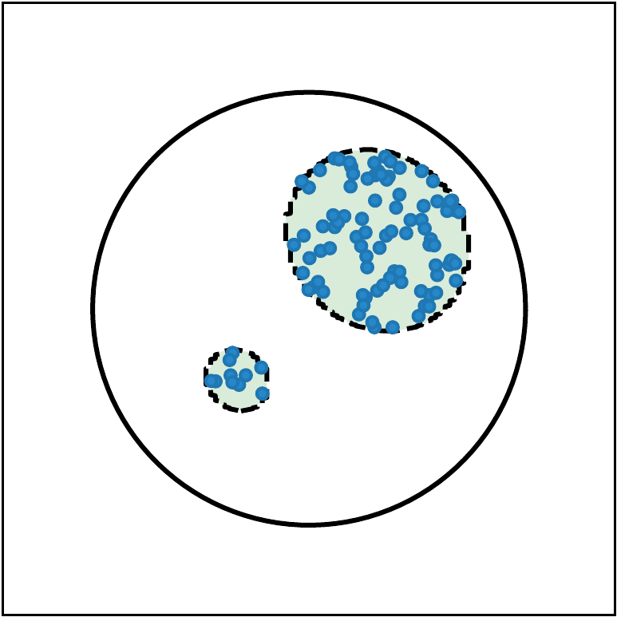
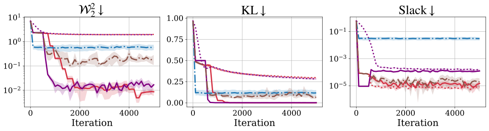
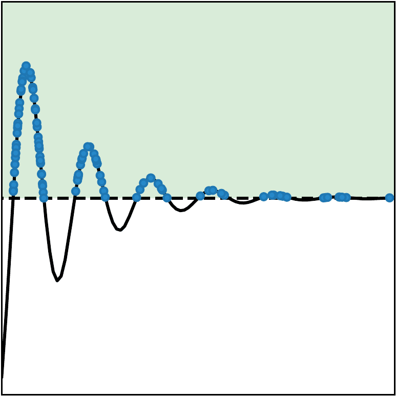
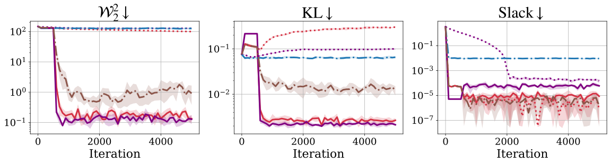
Scaling with dimension
On a stress test with five disconnected components, MASEM achieves the lowest Sinkhorn distance as the dimension \(d\) grows. It also stays competitive in wallclock time with the baselines.
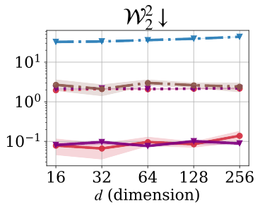
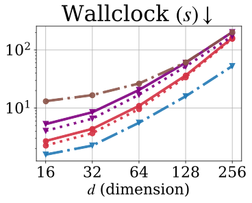
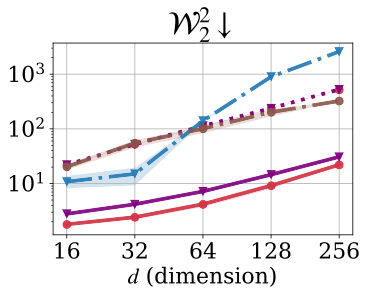
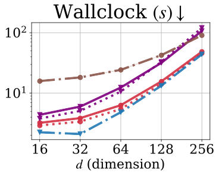
Robotics: motion planning with random obstacles
We sample constraint-satisfying spline trajectories for a 2D point mass through a course of 20 randomly placed obstacles. Without ground-truth samples, we report the feasible entropy and the entropy over homotopy classes: MASEM reaches the highest feasible entropy and covers more homotopy classes, i.e. more distinct routes through the obstacles.
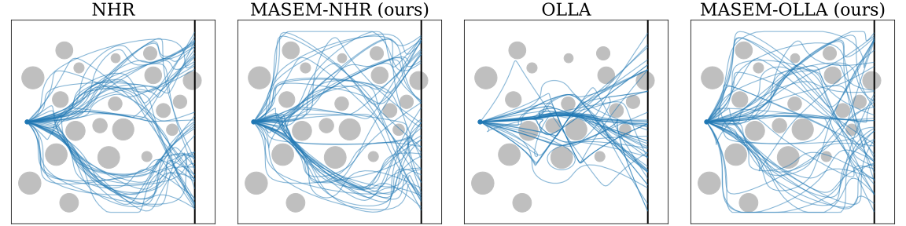
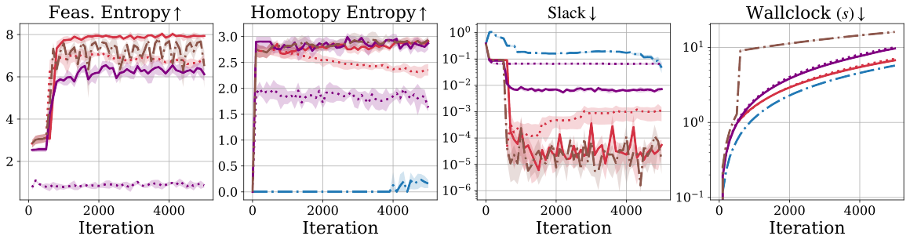
Paper
Manifold Sampling via Entropy Maximization. Cornelius V. Braun, Tilman Burghoff, Marc Toussaint. NeurIPS 2026. [PDF] [OpenReview]
If you find this work useful, please cite:
@inproceedings{braun2026manifold,
title={Manifold Sampling via Entropy Maximization},
author={Cornelius V. Braun and Tilman Burghoff and Marc Toussaint},
booktitle={The Fortieth Annual Conference on Neural Information Processing Systems},
year={2026},
url={https://openreview.net/forum?id=mAVz31YJlN}
}Code
The code is available at github.com/LIS-TU-Berlin/masem.